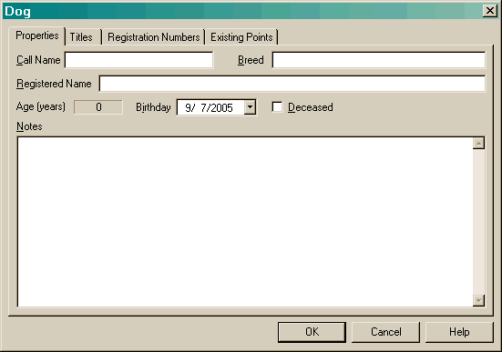
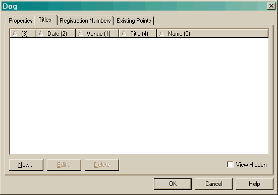
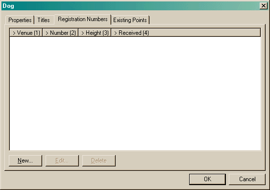
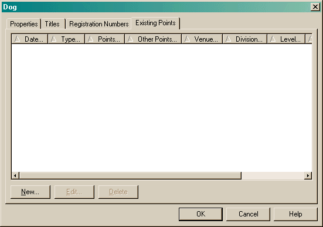

, you will be
taken to this page.
, you will be
taken to this page.The Dog Property dialog allows you to record quite a bit of information about your dog.

The only field that you absolutely must fill out is the Call Name. All other fields are optional. Though you probably will want to set the Birthday to the correct date!
If your dog has passed away, checking the Deceased button will enable a date you can enter. Once this is done, the age of the dog will no longer be based on the current date.
The Notes field is for any miscellaneous data you may want to record, for instance, an embedded chip id or city license number.

This page is for recording an titles that you earn. After entering a title
via a menu item or the toolbar button
, you will be
taken to this page.
The View Hidden option (also available on the main View->Show Hidden Titles menu), allows you to hide titles you no longer want to see. There are two occasions you may want to hide a title:
When you create a new title using the New button, or edit an existing entry with the Edit button (double-clicking on an entry will also edit it), you will be taken to the Title dialog.
If you notice the column headers, you may think they look a little strange. The "<" and ">" symbols denote a descending or ascending sort. The number in parentheses denotes the sort order. This applies to any lists you see that have this appearance.

The Registration Numbers pane is used to enter all the registration numbers you have for the various venues. This number will be listed in the Points view. When you create a new entry or edit an existing one, you will be taken to the Registration Number dialog.

Existing Points allow you to create a dog in Agility Record Book who has been competing for a while without the need to enter all of their runs. Typically, the points generated in the Points view are based only on runs that Agility Record Book knows about. If you have a dog with 200 runs, you may not want to enter all that data! This pane allows you to tell Agility Record Book about points you have already earned.
Clicking the New or Edit buttons will take you to the Existing Points dialog.